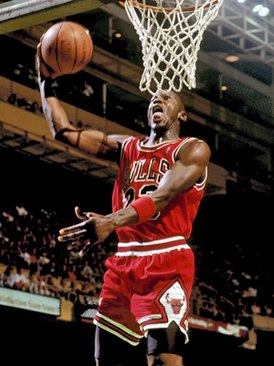

Знаменитый Майкл Джордан

Баскетбольные команды
В начале XX века начали оформляться первые профессиональные
баскетбольные команды. C одной стороны, на всей территории
Соединённых Штатов в населенных пунктах разнообразного масштаба
возникло существенное количество таких команд (количеством в
несколько сотен); с другой стороны, какая-либо организация
профессиональных игр практически отсутствовала. Игроки
произвольно перемещались между составами команд, матчи
устраивались в помещениях, не приспособленных для проведения
соревнований, появлялись и расформировывались разнообразные
лиги и объединения.
Баскетбольные игроки
Трое последних (Берд, Джонсон и Джордан) часто рассматриваются
как спортсмены, в наибольшей степени способствовавшие росту
популярности профессионального баскетбола. В 2001 году была
также образована младшая лига NBA — так называемая Лига развития.
В 2012 году в лиге играло 16 команд.
Предыдущая страница /// Следующая страница
© Владислав Вакуленчик Сергеевич